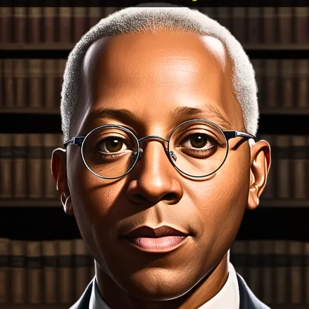

Carter G. Woodson
Carter G. Woodson was a historian who founded organizations and publications dedicated to studying Black history. His Negro History Week initiative helped establish the foundations of Black History Month.
Begin the lesson ↓
Essential Question & Objectives
Why did Woodson argue that Black history should be studied throughout the year?
Identify the figure's historical context, distinguish claims and evidence, compare perspectives, and construct a qualified historical interpretation.
Teacher Guide · Pacing & Accessibility
Discover 5 min · The World 8 min · Stories & Evidence 10 min · Decisions 8 min · Apply 10 min · Demonstrate 9 min. Use the sticky timer. Allow text-to-speech, partner discussion, accessible reading and independent writing.
Editorial caution: This draft uses a preexisting Hall summary. Verify person-specific dates, interpretations, source references and image permissions before student assignment.
Independent Learner Guide
Follow the six numbered sections. Use Check & Explain on each question; some questions require two selections. The timer is optional. Written work saves in this browser only.
History Beyond the Portrait
Imagine you must prepare a museum exhibit about Carter G. Woodson. Your task is to explain what can be supported without inventing missing details.
Carter G. Woodson was a historian who founded organizations and publications dedicated to studying Black history. His Negro History Week initiative helped establish the foundations of Black History Month.
What does a historical biography provide?
Where and When?
Hall placement: Arts, Discovery and Midcentury Change. Period: 1875–1950. Region: United States / Black Atlantic.
Carter G. Woodson was a historian who founded organizations and publications dedicated to studying Black history. His Negro History Week initiative helped establish the foundations of Black History Month.
Consider the political, cultural and social conditions surrounding this figure. The Hall's era and region labels are starting points; confirm specific dates and places in reliable sources.
Evidence, Interpretation and What Is Missing
Why this history matters: Understand historical scholarship as institutional work involving archives, teaching, and public outreach.
The Hall summary is a secondary narrative, not a verbatim primary document. To test it, identify a contemporary source or a scholarly analysis and examine its author, date, audience, purpose and limitations. Records are uneven: not every voice or event survived. The portrait is interpretive artwork.
Choose the Curator's Next Step
A museum has room for one further research project. Which investigation will help present Carter G. Woodson more responsibly?
Explain your choice and how it relates to the essential question.
Build the Historical Exhibit
Performance task: Map the relevant region and explain what geography cannot tell us about people's intentions. Include two details from the reading, distinguish one claim from documented evidence, and explain what remains uncertain.
Prompt: Why did Woodson argue that Black history should be studied throughout the year?
Check Your Historical Reasoning
Answer five questions, read each explanation and then calculate your score.
Which description best identifies Carter G. Woodson?
What is the most reliable next step after reading a biography?
Select TWO reliable methods of checking historical claims.
What makes a sound exhibit interpretation?
What should a historian do when evidence is missing?
Research Beyond This Summary
Make a two-column note sheet: claims in the Hall biography, and further evidence needed. Revise your first claim after discussing whose viewpoints are missing.
Research Trail and Editorial Status
This lesson draft draws on the Examine the Past Hall biography and portrait. Individual figure-specific research and fact-checking remain required. Never present the Hall illustration as an authenticated historical likeness.
- Black History Heroes — Hall of Legends (source of summary and illustration)
EDITORIAL DRAFT — NOT YET FULLY SOURCE-VERIFIED.